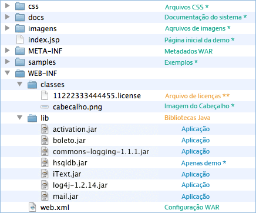

Boleto Bancário . com
Desde 2000 no mercado de emissão de boletos!
O que há no pacote
Introdução
O Boleto Web/Free é distribuído no formato WAR (Web Application Archive) e seu conteúdo está descrito abaixo.
Conteúdo

* Arquivos utilizados apenas na aplicação demonstrativa. Não é necessário incluí-los em sua aplicação.
Arquivo de licenças **
- Contém informações sobre suas licenças, como números de contas e datas de expiração.
- O nome do arquivo segue o padrão: {CNPJ}.license.
- Este arquivo só pode ser carregado pelo sistema entregue para o referido CNPJ. Sistemas entregues para outros CNPJs ou o sistema demonstrativo não são capazes de ler o seu arquivo de licenças.
- O arquivo pode ser mantido na raiz de um diretório no classpath da aplicação (recomendado), por exemplo "/WEB-INF/classes" ou na raiz de um JAR qualquer que esteja no classpath da aplicação.
- Troca a quente. Em caso de manutenção do arquivo em um diretório no classpath, é possível substituí-lo em seu servidor de aplicações a quente, sem necessidade de restart do servidor ou redeploy da aplicação.
Ao gerar o próximo boleto o sistema irá carregar automaticamente o novo arquivo licenças.
Esta facilidade pode ser utilizada sempre que houver alterações em suas licenças como renovação, homologação, alteração de dados e adição de novas contas.